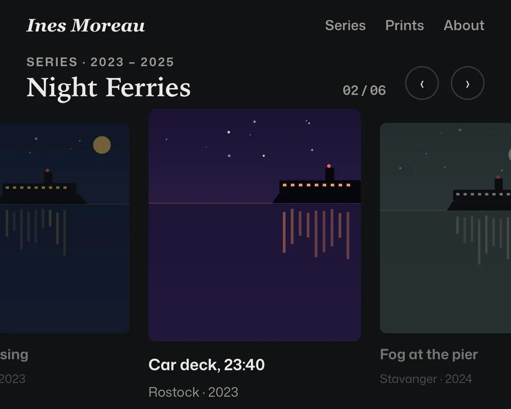

Snap gallery
Snap gallery is a DOM effect: scroll snapping; the centre card scales up, neighbours dim. One plain JavaScript file with no dependencies; add it with npx motion-library add snap-gallery.

Open it live, tune it and copy the code
What is Snap gallery?
A row of night photographs snaps card by card, the centre card scaling up while neighbours dim.
How does Snap gallery work?
Scale and dim come from each card’s distance to the centre every frame, so they track the scroll mid-swipe; CSS scroll snapping settles a real swipe.
How do I add Snap gallery to my website?
- In your project folder, run
npx motion-library add snap-gallery. It writesanimations/snap-gallery.js. Needs Node 18 or newer. - Import it and call it with a container element that has a size:
import fx from './animations/snap-gallery.js'; const stop = fx(document.querySelector('#hero')); - Call
stop()to clean up, for example when a component unmounts.
Every setting below is also a flag, so you can install it already tuned: npx motion-library add snap-gallery --shrink 0.25.
What settings can I tweak?
| Setting | Flag | Default | Range | Step |
|---|---|---|---|---|
| Side card shrink | --shrink | 0.1 | 0 to 0.25 | 0.01 |
| Snap (ms) | --travel | 700 | 250 to 1500 | 10 |
Specifications
- Renderer
- DOM (CSS and the Web Animations API)
- Category
- Scroll
- Dependencies
- None
- File size
- 8.9 KB, unminified
- Interactive
- Yes: it follows scrolling
- Reduced motion
- Respects prefers-reduced-motion
- Licence
- MIT-0: use it anywhere, no credit needed
Source code
// Snap gallery, on a photographer's portfolio: a horizontal row of night photographs snaps one card at a time, and the card in the centre scales up while its neighbours step back and dim.
// The scale and dim are read from each card's distance to the centre on every frame, so they follow the scroll exactly, mid-swipe included. Each move uses a strong ease-in-out and then holds, like a deliberate swipe; with a trackpad or finger, CSS scroll snapping does the settling.
const PARAMS = { shrink: 0.1, travel: 700 };
export default function (stage) {
const reduce = matchMedia('(prefers-reduced-motion: reduce)').matches;
const AH = 340, MINW = 400;
const shots = [
['Last crossing', 'Helsingør · 2023', ['#0d1b3a', '#1f3a6b', '#ffcf6b']],
['Car deck, 23:40', 'Rostock · 2023', ['#1a1030', '#3b2b5c', '#ff9b6b']],
['Fog at the pier', 'Stavanger · 2024', ['#18282d', '#3f5a5e', '#e8f1d0']],
['Night bus to the boat', 'Puttgarden · 2024', ['#0e1424', '#26324f', '#ffb347']],
['Lighthouse keeper', 'Skagen · 2024', ['#111a2c', '#2b3d63', '#fff1b8']],
['Arriving early', 'Kiel · 2025', ['#241a2e', '#6b3f5a', '#ffc98a']],
];
let seed = 3; const rnd = () => (seed = (seed * 16807) % 2147483647) / 2147483647;
const photo = ([sky, sea, light], i) => {
const hz = 120 + rnd() * 30, fx = 30 + rnd() * 110, win = Array.from({ length: 9 }, (_, k) => `<rect x="${fx + 12 + k * 9}" y="${hz - 22}" width="4" height="3" fill="${light}"/>`).join('');
const refl = Array.from({ length: 9 }, (_, k) => `<rect x="${fx + 12 + k * 9}" y="${hz + 6 + rnd() * 6}" width="3" height="${18 + rnd() * 40}" fill="${light}" opacity="${(0.18 + rnd() * 0.25).toFixed(2)}"/>`).join('');
const sky2 = Array.from({ length: 14 }, () => `<circle cx="${(rnd() * 240).toFixed(1)}" cy="${(rnd() * (hz - 50)).toFixed(1)}" r="${(0.5 + rnd()).toFixed(1)}" fill="#fff" opacity="${(0.3 + rnd() * 0.5).toFixed(2)}"/>`).join('') + (i % 2 ? '' : `<circle cx="${170 + rnd() * 40}" cy="${40 + rnd() * 30}" r="11" fill="${light}" opacity=".9"/>`);
const extra = sky2 + (i === 4 ? `<rect x="190" y="${hz - 70}" width="10" height="70" fill="#d9d4c8"/><path d="M186 ${hz - 70}h18l-4-10h-10z" fill="${light}"/><path d="M195 ${hz - 76} L 60 ${hz - 110} L 60 ${hz - 96}z" fill="${light}" opacity=".18"/>` : i === 2 ? `<rect width="240" height="300" fill="#d9e3df" opacity=".18"/>` : '');
return `<svg viewBox="0 0 240 300" preserveAspectRatio="xMidYMid slice" aria-hidden="true"><defs><linearGradient id="sg${i}" x1="0" y1="0" x2="0" y2="1"><stop offset="0" stop-color="${sky}"/><stop offset="1" stop-color="${sea}"/></linearGradient></defs><rect width="240" height="300" fill="url(#sg${i})"/><rect y="${hz}" width="240" height="${300 - hz}" fill="${sky}" opacity=".7"/><path d="M0 ${hz}h240" stroke="${light}" stroke-opacity=".25"/>${extra}<path d="M${fx} ${hz}l8 -12h96l10 12z" fill="#05070d"/><rect x="${fx + 8}" y="${hz - 26}" width="92" height="14" rx="2" fill="#05070d"/><rect x="${fx + 60}" y="${hz - 40}" width="10" height="14" fill="#05070d"/>${win}${refl}<circle cx="${fx + 64}" cy="${hz - 42}" r="2" fill="#ff5f56"/></svg>`;
};
const root = document.createElement('div');
root.className = 'sg-root';
root.innerHTML = `<style>
.sg-root { position: absolute; inset: 0; overflow: hidden; background: #111214; color: #ecebe8; font-family: "Mona Sans", system-ui, -apple-system, sans-serif; }
.sg-art { position: absolute; left: 0; top: 0; height: ${AH}px; transform-origin: 0 0; }
.sg-nav { height: 40px; display: flex; align-items: center; gap: 16px; padding: 0 22px; font-size: 11.5px; font-weight: 560; color: #9a9893; }
.sg-nav strong { margin-right: auto; color: #ecebe8; font: italic 600 15px/1 ui-serif, Georgia, serif; }
.sg-head { display: flex; align-items: flex-end; gap: 10px; padding: 6px 22px 0; }
.sg-head h1 { margin: 0 auto 0 0; font: 600 22px/1 ui-serif, "Iowan Old Style", Georgia, serif; letter-spacing: -0.01em; }
.sg-head h1 small { display: block; margin-bottom: 5px; font: 650 10px/1 "Mona Sans", system-ui, sans-serif; letter-spacing: .12em; color: #9a9893; }
.sg-count { font-size: 11px; font-weight: 600; color: #9a9893; font-variant-numeric: tabular-nums; margin-right: 6px; }
.sg-btn { width: 28px; height: 28px; border-radius: 50%; display: grid; place-items: center; box-shadow: inset 0 0 0 1px #3a3b3f; font-size: 13px; transition: transform .16s cubic-bezier(0.23, 1, 0.32, 1); }
.sg-btn.press { transform: ${reduce ? 'none' : 'scale(0.94)'}; background: #2a2b2f; }
.sg-row { display: flex; gap: 14px; overflow-x: auto; overflow-y: hidden; scroll-snap-type: x mandatory; scrollbar-width: none; padding: 12px 0 0; margin-top: 0; }
.sg-row::-webkit-scrollbar { display: none; }
.sg-card { flex: none; width: 170px; scroll-snap-align: center; transform-origin: 50% 50%; will-change: transform, opacity; }
.sg-card svg { display: block; width: 170px; height: 186px; border-radius: 6px; }
.sg-card b { display: block; margin-top: 9px; font-size: 12.5px; font-weight: 640; }
.sg-card span { font-size: 10.5px; color: #9a9893; }
.sg-pad { flex: none; width: 1px; }
</style>
<div class="sg-art">
<div class="sg-nav"><strong>Ines Moreau</strong><span>Series</span><span>Prints</span><span>About</span></div>
<div class="sg-head"><h1><small>SERIES · 2023 – 2025</small>Night Ferries</h1><span class="sg-count"></span><span class="sg-btn">‹</span><span class="sg-btn sg-next">›</span></div>
<div class="sg-row"><div class="sg-pad"></div>${shots.map((s, i) => `<figure class="sg-card" style="margin:0">${photo(s[2], i)}<b>${s[0]}</b><span>${s[1]}</span></figure>`).join('')}<div class="sg-pad"></div></div>
</div>`;
stage.append(root);
const box = root.querySelector('.sg-art'), row = root.querySelector('.sg-row'), cards = [...root.querySelectorAll('.sg-card')];
const pads = [...root.querySelectorAll('.sg-pad')], count = root.querySelector('.sg-count'), next = root.querySelector('.sg-next');
let centres = [];
const fit = () => {
const W = stage.clientWidth, H = stage.clientHeight, s = Math.min(H / AH, W / MINW) || 1, aw = W / s;
box.style.width = aw + 'px'; box.style.top = (H - AH * s) / 2 + 'px'; box.style.transform = `scale(${s})`;
// padding on both ends lets the first and last card reach the centre
pads.forEach(p => { p.style.width = Math.max(1, (aw - 170) / 2 - 14) + 'px'; });
centres = cards.map(c => c.offsetLeft + c.offsetWidth / 2 - row.clientWidth / 2);
};
const ro = new ResizeObserver(fit); ro.observe(stage); fit();
// Simulated visitor: one card at a time, a pause on each, then a quicker run back to the first.
const easeIO = t => { // cubic-bezier(0.77, 0, 0.175, 1), solved for x
let lo = 0, hi = 1, u = t;
for (let i = 0; i < 18; i++) { u = (lo + hi) / 2; const x = 3 * u * (1 - u) ** 2 * 0.77 + 3 * u * u * (1 - u) * 0.175 + u ** 3; if (x < t) lo = u; else hi = u; }
return 3 * u * u * (1 - u) + u ** 3;
};
let seg = null, idx = 0, userUntil = 0, raf, pressT, holdUntil = performance.now() + 1200;
const take = () => { userUntil = performance.now() + 3000; seg = null; row.style.scrollSnapType = ''; };
['wheel', 'touchstart', 'pointerdown'].forEach(e => row.addEventListener(e, take, { passive: true }));
function drive(now) {
if (now < userUntil) return;
if (!seg) {
if (now < holdUntil) return;
const back = idx === cards.length - 1; idx = back ? 0 : idx + 1;
// snapping would fight a scripted scroll, so it is switched off while the page drives itself
row.style.scrollSnapType = 'none';
seg = { from: row.scrollLeft, to: centres[idx], t0: now, dur: back ? PARAMS.travel * 1.8 : PARAMS.travel };
// reduced motion: no glide along the row; it cuts to the next card with a short fade
if (reduce) { seg.dur = 1; row.animate([{ opacity: 0 }, { opacity: 1 }], { duration: 240 }); }
next.classList.add('press'); clearTimeout(pressT); pressT = setTimeout(() => next.classList.remove('press'), 160);
}
const k = Math.min(1, (now - seg.t0) / seg.dur);
row.scrollLeft = seg.from + (seg.to - seg.from) * easeIO(k);
if (k >= 1) { seg = null; holdUntil = now + 1500; }
}
let shown = -1;
function frame(now) {
drive(now);
const x = row.scrollLeft, gap = 184;
let best = 0, bd = 1e9;
cards.forEach((c, i) => {
const d = Math.min(1, Math.abs(centres[i] - x) / gap);
if (Math.abs(centres[i] - x) < bd) { bd = Math.abs(centres[i] - x); best = i; }
if (!reduce) c.style.transform = `scale(${(1 + PARAMS.shrink * 0.4 - PARAMS.shrink * d).toFixed(4)})`;
c.style.opacity = (1 - 0.55 * d).toFixed(3);
});
if (best !== shown) { shown = best; count.textContent = `${String(best + 1).padStart(2, '0')} / ${String(cards.length).padStart(2, '0')}`; }
raf = requestAnimationFrame(frame);
}
raf = requestAnimationFrame(frame);
return () => { cancelAnimationFrame(raf); clearTimeout(pressT); ro.disconnect(); root.remove(); };
}